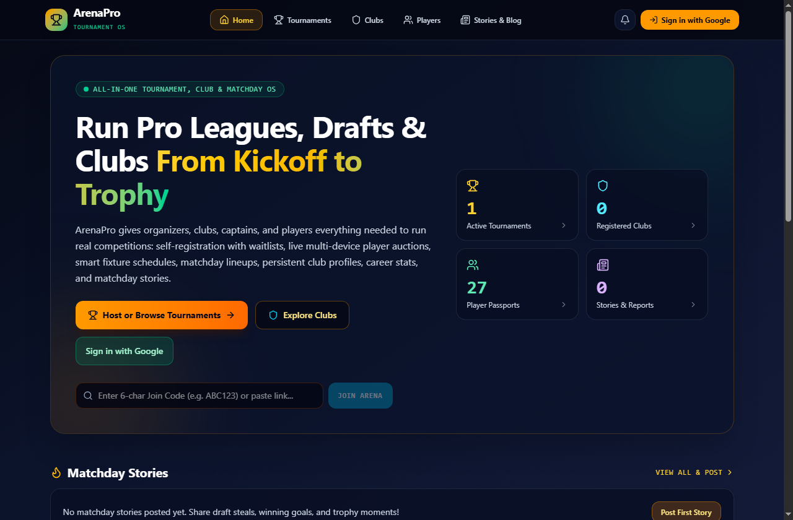
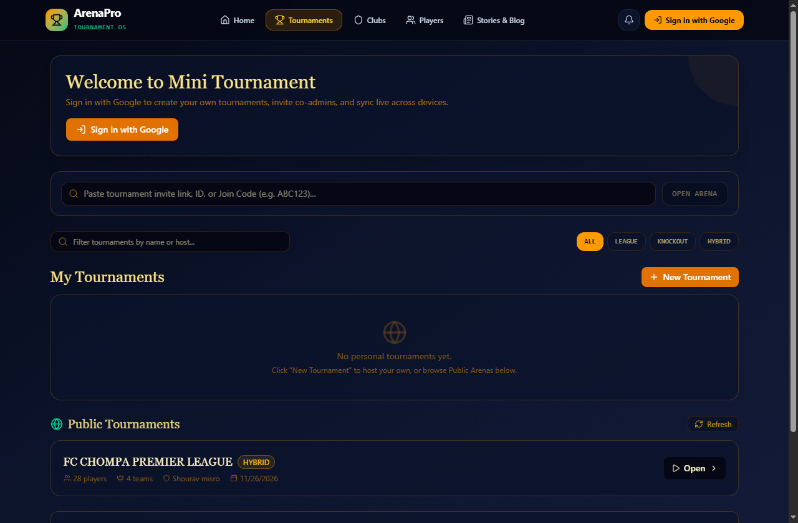
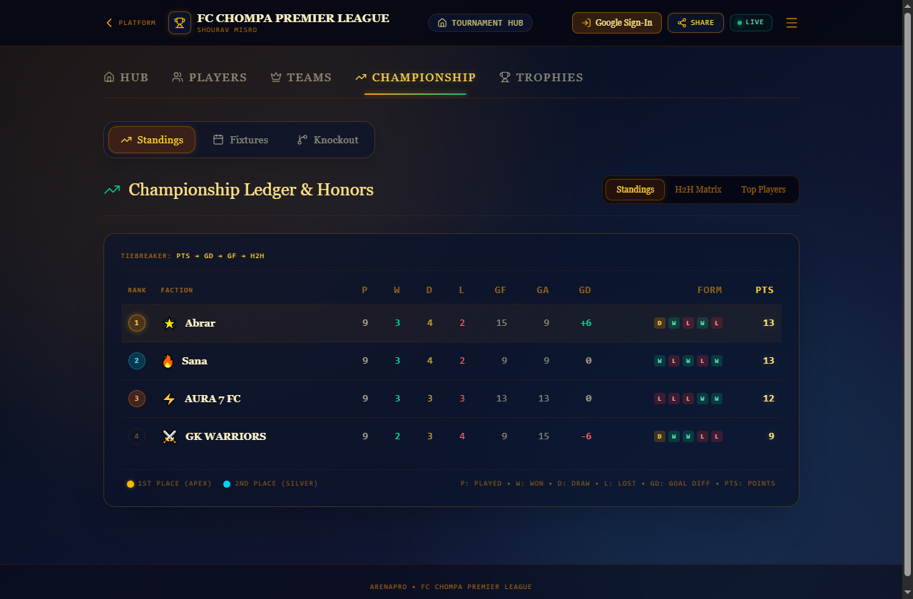

Guide • By ArenaPro Team • 7 min read
How to Use ArenaPro: Complete A–Z Guide, Why Organizers Switch & Full Feature Tour (With Screenshots)
Key Takeaways
- Zero spreadsheets or messy WhatsApp lists: bulk-import rosters or open self-registration with automatic waitlists and fee verification.
- Multi-organizer isolation & Co-Admins: every organizer owns their tournaments securely via Google Sign-In, while existing PIN players can link their Google accounts with zero data loss.
- Live multi-device Auction Room with Max-Safe-Bid guardrails prevents captains from overspending before completing their squads.
- Complete matchday workflow: player RSVP (Going/Late/Out), captain Starting Lineup builder, live standings, Head-to-Head matrix, and penalty shootouts.
- Persistent Clubs and cross-tournament Player Career Passports with 5-axis SVG Radar comparison charts.
Why Use ArenaPro Instead of WhatsApp Groups & Spreadsheets?
Most local leagues, campus cups, and turf tournaments start in a WhatsApp group and a fragile Excel sheet. Within two matchdays, organizers face duplicate player entries, arguments over goal difference vs. head-to-head tiebreakers, outdated screenshots of standings, and captains who do not know which players are actually showing up.
ArenaPro replaces every scattered tool with one live, mobile-first competition operating system. When a score is saved, league tables, Head-to-Head matrices, Golden Boot leaderboards, and player career passports update instantly across every device.
| Workflow Step | WhatsApp + Excel Setup | ArenaPro Platform |
|---|---|---|
| Player Onboarding | Manual copy-paste from chat messages | 6-char Join Code, Waitlist & Duplicate Merge |
| Draft / Team Selection | In-person only or chaotic voice calls | Live Multi-Device Auction & Spin Wheel + Bid Guardrails |
| Standings & Tiebreakers | Manual formulas prone to errors | Real-time Pts, GD, GF, H2H & 5-Match Form |
| Matchday Lineups | Last-minute texts before kickoff | Per-Match Player RSVP + Captain Lineup Builder |
| Player & Club History | Deleted after the tournament ends | Permanent Clubs & Verified Career Passports |

Step 1: Sign In with Google & Create or Open a Tournament
Visit ArenaPro and click Sign in with Google in the top navigation bar. Your organizer profile, hosted tournaments, and player history stay tied to your account—isolated from other organizers using the platform.
Click Tournaments → New Tournament to choose League (round-robin), Knockout (elimination), or Hybrid (group league followed by playoffs), and set visibility to Public or Link-Only Private. You can also invite Co-Admins by their Google email so co-organizers can share scoring and management duties.

Step 2: Onboard Players Without Friction (Join Codes, Waitlists & Google Linking)
Every tournament automatically receives a 6-character Join Code (for example, ZRGSZM) and a direct registration link (?t=<id>&join=1). Organizers can configure a player capacity limit, registration deadline, entry fee, and payment instructions inside Admin → Registrations, Google Links & Waitlist.
Already imported players from a WhatsApp list? Existing players do not need to register twice. They simply click Connect Google on the Tournament Hub, select their existing roster name, and verify their 4-digit PIN (or request organizer approval) to keep 100% of their stats, team, and history.

Step 3: Run a Fair Live Draft (Multi-Device Auction or Spin Wheel)
Open the Draft tab as Admin. When you spin the animated wheel, the nominated player syncs live to every Captain’s phone. Captains place live bids directly from their own devices using quick-bid buttons.
ArenaPro includes automatic Max-Safe-Bid guardrails: based on minimum squad size and reserve price per remaining slot, the system calculates each team’s maximum safe bid so a captain can never burn their entire budget early and fail to field a full squad.

Step 4: Automated Standings, H2H Matrix & Knockout Penalties
Generate round-robin schedules in seconds and log match scores, goals, assists, saves, clean sheets, and MVPs. Standings calculate Points, Goal Difference, Goals For, and 5-match Form automatically.
Organizers can choose their preferred tiebreaker order (Points → GD → GF → H2H, or UEFA-style Head-to-Head priority), inspect the interactive H2H Matrix grid, and settle drawn knockout ties with full Penalty Shootout score tracking.

Step 5: Head-to-Head Matrix, Matchday Lineups & Player Radar Passports
Before kickoff, players mark per-match RSVP (Going, Late, or Out) in their Player Panel, and Captains build their Starting XI and Substitutes in the Matchday Lineup Builder (with automatic Goalkeeper coverage checks).
After the whistle, every verified player builds a permanent Career Passport across all tournaments they play, complete with a 5-axis SVG Performance Radar for side-by-side player comparisons.

Frequently Asked Questions
Is ArenaPro free to use for local tournaments and clubs?
Yes. Hosting tournaments, player registration, live synced drafts, standings, knockout brackets, clubs, and player career passports are 100% free.
Do players who were already added by an organizer need to register again?
No. Existing players can click "Connect Google" on the tournament Hub, pick their existing roster name, and verify with their 4-digit PIN (or ask the organizer to approve) so all their existing stats and team data stay intact.
Can captains bid from separate phones during a player auction?
Yes. ArenaPro syncs the active player on the auction block and live bids in real time via Firestore so captains can bid remotely from their own devices.
What happens if a knockout match ends in a draw?
The Knockout Bracket supports regulation draw scores paired with Penalty Shootout inputs (for example, 1–1 and 4–2 on penalties), advancing the shootout winner without distorting league goal totals.
Can multiple organizers manage the same tournament?
Yes. The tournament owner can add Co-Admins by Google email inside Admin → Access Control, PINs & Data Management.